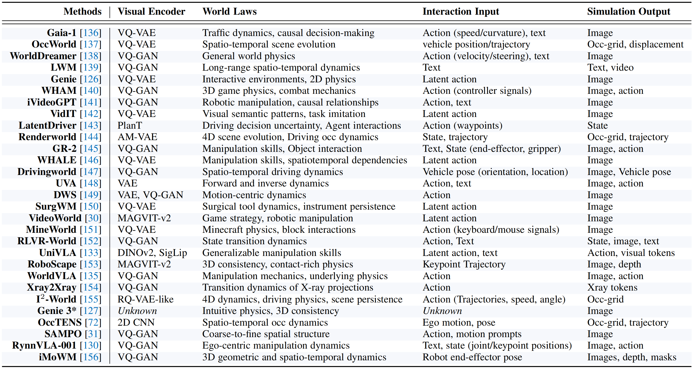
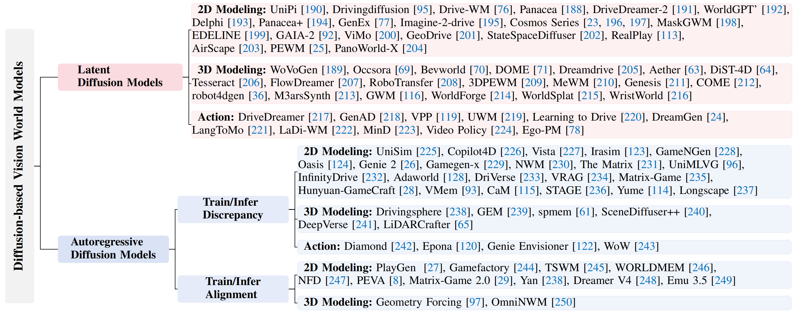
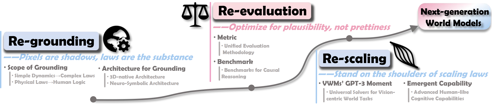

🚀 Motivation: Why a Vision-Centric Survey?
Vision offers the richest and most direct connection to the physical world, but it is also the hardest to model. A VWM must learn from high-dimensional, complex visual streams, not tidy, low-dimensional state vectors.
Faced with this complexity, the research field has fragmented, with different communities focusing on different parts of the problem:
- The video generation community treats VWMs as controllable synthesizers, prioritizing fidelity and temporal consistency.
- The reinforcement learning/robotics community views them as learned dynamics simulators for sample-efficient planning and sim-to-real transfer.
- Predictive/JEPA-style approaches avoid pixel reconstruction, forecasting in representation spaces for downstream task utility.
These divergent goals lead to inconsistent terminology and incomparable metrics. Existing surveys, while valuable, still do not solve this fragmentation.
- Application-oriented surveys (e.g., in robotics or autonomous driving) provide depth but lack a systematic analysis of VWM as a standalone technology.
- Broad conceptual surveys offer high-level overviews but treat visual input as a passive assumption rather than the active design challenge it is.
To fill these gaps, we argue that addressing the field's fragmentation calls for a shift in perspective: treating the visual nature of the world not as a passive input challenge, but as the central design driver for world modeling.
🧩 Conceptual Framework
At its core, a VWM is defined as follows:
A vision world model is a system that understands and simulates the laws of the physical world through visual observation and conditioned interaction.
Based on this, we establish a conceptual framework that decomposes VWM into three essential components:

Figure 2: The conceptual framework of VWM. A VWM receives the high-dimensional visual context and interaction conditions (action, instruction, etc.) of the physical world, and ultimately performs future simulations for this physical world.
- (1) The Perceptual Foundation: How visual streams (RGB, depth, point clouds, etc.) are encoded into structured representations.
- (2) The Cognitive Core: What "rules of the world" are learned, progressing from spatio-temporal coherence to physical dynamics and causal reasoning.
- (3) The Key Capability: How VWM performs controllable simulation conditioned on actions, language, or other interaction prompts.
🗺️ Taxonomy of VWM Designs
We provide an in-depth analysis of
VWMs' four major architectural families, applying our three-component framework to compare their
underlying mechanisms:

Figure 3: A taxonomy of VWM designs, organized into 4 primary classes (with 7 sub-classes) along with other architectural approaches.
-
Sequential Generation
- Autoregressive Transformers: Model complex visual dynamics as a sequence prediction problem, converting the world into discrete "visual language" tokens.
- MLLM as VWM Engine: Leverage the pre-trained knowledge of Multimodal Large Language Models to perform high-level semantic reasoning and symbolic simulation.
-
Diffusion-based Generation
- Latent Diffusion: Apply iterative denoising within a compressed latent space to model the next state, enabling high-fidelity synthesis efficiently.
- Autoregressive Diffusion: Combine step-by-step autoregressive reasoning with the high-fidelity synthesis of diffusion models to generate each future frame/token sequentially.
-
Predictive Architectures
- JEPA: This non-generative paradigm models dynamics in an abstract representation space, predicting features rather than pixels to filter out irrelevant visual details.
-
State Transition Models
- Latent State-Space Modeling: Learn a holistic, global state vector (e.g., RSSM) to capture the comprehensive dynamics of the entire scene, prized for efficiency in model-based RL.
- Object-Centric Modeling: Introduce a strong compositional bias by decomposing the world into a set of discrete object representations and modeling their individual dynamics and interactions.

Table 1: Examples of autoregressive Transformer-based VWMs.

Figure 4: Examples of diffusion-based (latent diffusion, autoregressive diffusion) VWMs.
📊 Evaluation Ecosystem
We provide an extensive review of the evaluation landscape, cataloging metrics and distinguishing between datasets and benchmarks types.
Figure 5: Overview of the evaluation ecosystems of VWMs.
Metrics
- Visual Quality: Assesses the fidelity of generated images/videos.
- Dynamics Prediction: Evaluates the accuracy of the learned "transition function".
- Task Execution: Measures the model's utility in downstream tasks.
- Physical Knowledge: Probes the model's understanding of "common sense" physics, such as object permanence and causality.
Datasets and Benchmarks
-
General-Purpose World Modeling: Foundational benchmarks designed to evaluate core capabilities:
- World Prediction and Simulation
- Physical and Causal Reasoning
-
Application-Specific World Modeling: Datasets and testbeds tailored for high-impact downstream applications:
- Embodied AI and Robotics
- Autonomous Driving
- Interactive Environments and Gaming
💡 Challenges and Future Directions
We organize our analysis around three interconnected calls to action for the next generation of VWMs:

Figure 6: Overview of the challenges and future directions for the next generation VWM.
- Re-grounding: We must move beyond superficial imitation to establish robust foundations for deep physical and causal understanding, for example, by integrating physics rules or fusing neural-symbolic reasoning.
- Re-evaluation: We call for a critical re-evaluation of metrics, challenging those that prioritize misleading visual fidelity over true physical plausibility and causal logic.
- Re-scaling: We explore how VWMs can achieve their "GPT-3 moment" not through size alone, but by leveraging new scaling paradigms for reasoning, adaptation, and universal task solving.